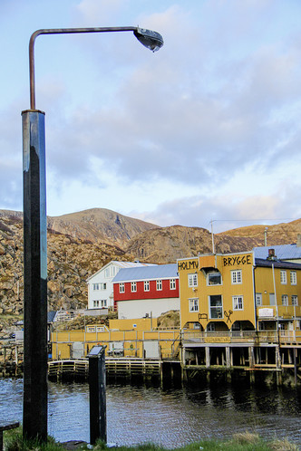

Несколько десятков достопримечательностей, разбросанных по огромной площади, помогают людям найти ответы на вопросы о своем месте в этом мире.
Оказавшись в Заполярной Норвегии, редактор «Вокруг света» понял: все мы пришельцы на этой планете и нам надо научиться разговаривать с ней. Найти общий язык с окружающим миром. С беспощадной и честной дикой природой, которая сильнее и мудрее нас. С космосом, который с каждым днем становится все ближе.
Человек из моря
Человек вышел из мо ря. Покрытый шипами и бугорками, как коралл. Встал на твердую землю, научился ходить, обзавелся семьей, домом и другими ценностями. Но отметины прошлой жизни остались, а главное — память о том, кто он и откуда. И вот он пришел к морю, обнаженный, неся в руках эту память в виде хрустального обелиска — дань прежней обители.
Чугунный «Человек из моря», созданный норвежцем Хилли Ульсеном, стоит на горке в коммуне Бё, на юго-западе острова Лангёйа архипелага Вестеролен. Полярной ночью в свете северного сияния обелиск в руках человека кажется синим, как море, к которому он пришел. Из которого вышел.
Кто мы? Откуда? Зачем мы здесь? Стоя над холодным, прозрачным и прекрасным пейзажем рядом с «Человеком из моря», глядя на Лофотенскую стену вдали, на маленькие одинокие домики среди воды, поневоле задаешься вопросами о своем месте в этом могучем и бескрайнем мире.
Почти 30 лет назад ответы на эти вопросы было предложено поискать художникам из 18 стран мира — участникам проекта Skulpturlandskap Nordland («Скульптурный ландшафт Нурланна»), он же Artscape Nordland. Организаторы — муниципальные власти фюльке Нурланн — задумали сделать из большого и негусто заселенного округа в Северной Норвегии галерею под открытым небом площадью почти 40 000 км².
Жители каждой коммуны решали, нужно ли им иметь свою скульптуру. А художники выбирали место для будущего произведения и уже потом предлагали эскизы. Этот сложный диалог между скульпторами, природой и местными жителями в итоге привел к тому, что в большинстве муниципалитетов Нурланна и в одном в соседнем Тромсе появились работы 36 художников.
Все 36 за раз не обойти. И не только потому, что между самой южной и самой северной из них расстояние в 500 километров, а потому, что каждый объект «Артскейпа» требует отдельного путешествия. Каждый нужно искать — сначала на карте, потом на месте, которое этот арт-объект приспособил под себя, а иногда приходится куда-то взбираться или, наоборот, спускаться по траве и камням, прыгать по прибрежным валунам или долго идти навстречу ветру.
Голова
Так я шла, затягивая капюшон все крепче, два километра вдоль северного берега острова Вествогёй, от рыбацкой деревни Эггум на запад, мимо остатков немецкой радиолокационной станции времен Второй мировой войны, по тропе из гранитной крошки.
Справа — холодный океан, слева — холодные озера и заснеженные вершины, впереди — простор старых овечьих пастбищ и ветер в лицо. Там вдали, на мысу, стоит гранитный столбик с железной головой. Это «Голова» швейцарского художника Маркуса Реца.
С самого начала принципиальной для проекта Artscape Nordland была идея, чтобы каждый объект создавал собственное место в пространстве, добавляя ему новое измерение и давая возможность зрителю освободить ум — и этим открытым к искусству и природе умом интерпретировать произведение по-своему.
Вот голова, обращенная к морю, расположена на уровне человеческого взгляда. Ты подходишь и смотришь туда же, куда и она. Ты начинаешь обходить пьедестал по кругу и видишь не только то, как меняется фон — пейзаж, — но и то, как трансформируется сам объект в этом пейзаже.
16 раз голова меняет форму. Сначала ты видишь классический портрет в профиль, а зайдя с противоположной стороны, неожиданно обнаруживаешь перед собой голову вверх тормашками. Маркус Рец показывает, как мы наблюдаем за окружающими нас вещами, как эволюционирует наш взгляд на мир и представления о нем.
В великолепном ландшафте, окружающем «Голову», меняются цвета и перспективы. И я, обходя ее трижды по кругу, понимаю, что это моя голова. Другой, заглядывая в переменчивое лицо, тоже узнает себя.
Если ты ищешь ответы, то в этом месте трудно не остановиться, не замереть, не посмотреть вдаль. Но в суматохе жизни — легко.
Женщина-фонарь
— Люди часто проходят мимо того или иного объекта «Артскейпа», даже не понимая, что это скульптура. Думая, например, что это просто уличный фонарь, — Семьон Герлиц, главный хранитель деревни Нюксун, задрав голову вверх, смотрит в женское лицо, склоненное к нему из «фонаря».
Мы стоим в проеме между старыми домами над водой. — Это произведение в двух частях норвежки Ингхильд Карлсен. Одна половина — в десяти километрах отсюда, в Мюре. Другая — здесь, в Нюксуне. Две рыбацкие деревни. Мюре — современная, богатая. Нюксун — процветавшая когда-то, а потом заброшенная.
Две одинаковые женщины в виде фонарей. Как связь между нами, живущими по разные берега. Тут свет и там свет. Он хорошо заметен зимой, когда трудно отличить день от ночи. Понимать можно по-разному. Важно то, что женщина стоит на берегу и молится, чтобы муж-рыбак вернулся домой. Рыбаки ведь выходили в море в любую погоду. И не всегда возвращались. А дома их ждал свет. Это наше прошлое и настоящее, связь того, что было, с тем, что должно быть.
Женщина-фонарь появилась в Нюксуне в 1995 году, когда он был еще городом-призраком с полуразрушенными, съехавшими в воду домами, покинутыми последними жителями в 1970-е. Семьон Герлиц приехал сюда в 1997-м из Дюссельдорфа и начал вместе с другими людьми из разных стран «поднимать» заполярную деревню.
Его гордость — Holmvik Brygge — гестхаус, ресторан, музей, культурный центр, который он восстановил с друзьями по кусочкам, используя «останки» семи развалившихся домов. Так Нюксун из богом и людьми забытого места превратился в арт-объект на краю северной земли. Здесь постоянно живет полтора десятка человек. Четверо из них — дети. А взрослые в основном занимаются искусством и культурой.
Среди них — Мари Элизабет Мьяланн и ее муж Свейн Эрик Тёйен. Она — философ и бывший священник, он — архитектор и фотограф. Мари курирует художественную галерею и ретрит-центр. Свейн запечатлевает на фотографиях северное сияние. Они живут здесь постоянно, как и Семьон, немец, ставший норвежцем.
Глаз в камне
— Такое чувство, что норвежец — не национальность, а что-то вроде призвания. Идти на зов природы, жить в этой трудной, невыносимой красоте, так близко к космосу, пытаться договориться с ним на языке пришельца… — рассуждаю я, безнадежно влюбленная в эту холодную страну. — Наверное, неслучайно художники из разных стран пришли сюда общаться с природой при помощи искусства.
— Я думаю, Северная Норвегия идеальна для такого проекта, — отвечает Семьон, невольно ставший моим духовным проводником по «Артскейпу» Нурланна. — У нас есть океан, горы, мощный ветер, два месяца неуходящего полуночного солнца и два месяца без солнца. И есть северное сияние. Это место, которое постоянно меняет краски, где можно острее всего почувствовать силу природы. Понять, насколько ты мал по сравнению с ней.
— Понять, что ты гость, а не хозяин… Так?
— По мне — да. Но я также чувствую, что природа хочет нас спасти, научить чему-то. Некоторые произведения «Артскейпа» показывают мне, как наша жизнь зависит от природы, а другие говорят о том, что природа открыта для нас. Моя любимая скульптура — «Глаз в камне». Она именно об этом.
Трехметровый гранитный блок с отверстием — «дверью» — внутри поставлен англичанином Анишем Капуром в коммуне Лёдинген, на грубых камнях у кромки моря. Во время прилива вода поднимается до самого «глаза». Он похож на портал, ведущий в мир по ту сторону человеческого.
— Для меня эта скульптура как приглашение от природы, адресованное людям, — говорит философ Семьон. — У камня грубые бока, только одна сторона отполирована. Так мы поступаем с природой, пытаясь ее пригладить и приспособить под себя. Но какие бы преступные вещи мы с ней ни творили, природа всегда прощает нас. Через отверстие в камне она зовет нас к себе. Дверь открыта. Этому камню 180 миллионов лет. У природы и людей разное летоисчисление. Мы уйдем, а камни останутся еще на миллионы лет. А что останется после нас? Да, людям нужна цивилизация, но необходимо постоянно возвращаться к природе.
Ориентировка на местности
Нурланн, Норвегия
Условные обозначения
- Фюльке Нурланн
- Деревня Нюксун
- Коммуна Бё
Площадь Нурланна 38 456 км² (2-е место в Норвегии)
Население 242 000 чел. (10-е место)
Плотность населения 6 чел/км²
Площадь Норвегии 385 000 км² (61-е место в мире)
Население ~ 5 402 000 чел. (118-е место)
Плотность населения 14 чел/км²
ВВП ~ 362 млрд долл. (32-е место)
ДОСТОПРИМЕЧАТЕЛЬНОСТИ Будинская кирка (1240 год) в коммуне Будё, арт-центрKaviarFactory
(«Икорная фабрика») в Хеннингсвере, саамская ферма северных оленей Inga Sami Siida на острове Хиннёйа.
ТРАДИЦИОННЫЕ БЛЮДА сушеная треска, приготовленная всеми возможными способами, вяленое мясо кита, суп
из
баранины.
ТРАДИЦИОННЫЕ НАПИТКИ молоко (норвежцы — самая «молокопьющая» нация), медовое вино.
СУВЕНИРЫ стекло, керамика и украшения ручной работы, коричневый сыр Brunost.
РАССТОЯНИЕ от Москвы до Будё ~ 1750 км (от 4 часов в полете без учета пересадок)
ВРЕМЯ отстает от московского на час летом, на 2 часа зимой
ВИЗА «шенген»
ВАЛЮТА норвежская крона (1 NOK ~ 0,11 USD в 2022 году)